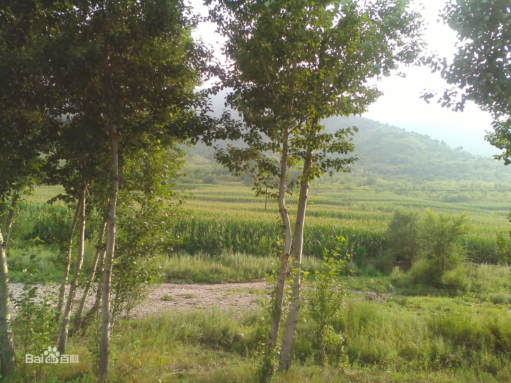

在看《后来的我们》的过程中，我最心疼的其实见清的老婆，不仅老公一直放不下前任，公公在车站还抓着她的手，喊的却是另一个女孩的名字。
而见清，其实也是个渣男，多次对小晓使用冷暴力，小晓提出分手上了地铁，他追了出去却没有勇气跟她走。因为小晓说了，如果他追上去就会跟他一辈子。
而且他还是出轨惯犯。和小晓在一起的时候，穷困潦倒了还在网上撩妹；结婚了过年回不去，老婆也不放心他，让儿子通过视频查岗；如果不是刚好被同事撞上，他估计还会把小晓推倒；他问，如果我们还在一起呢？小晓说，那你已经找了不下十个小三了。